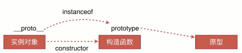
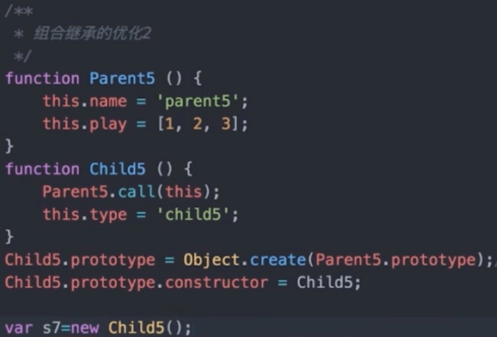

实例
- 自如谈兴趣,巧妙示实例,适时讨疑问(1)
- 节奏要适宜,切忌小聪明
实战
-
方向要对,过程要细
-
胆子要大,心态要和
jquery常见问题
1.核心架构
2.事件委托
3.插件机制
1.(慕课网:jq源码解析 架构 2-3)
ajQuery.fn = ajQuery.prototype = {
name: 'aaron',
init: function(selector) {
this.selector = selector;
return this;
},
constructor: ajQuery
}
ajQuery.fn.init.prototype = ajQuery.fn
2.(慕课网:jq源码解析 DOM 5-12)
简单来说就是把
target 到根节点 div 通过 node.parentNode 遍历一遍，然后找到对应的委托元素节点，如果符合就缓存起来用于之后的操作，可以通过 jQuery.event.handlers
方法我们可以获取类似这种的一组数据结构
$(document).on( "click" , "button",function(e){}就是当点击document时查看子元素是否是button,是就执行方法
3.(慕课网:jq源码解析 架构 2-5)
aAron.extend = aAron.fn.extend = function () {
var options, src, copy,
target = arguments[0] || {},
i = 1,
length = arguments.length;
//只有一个参数，就是对jQuery自身的扩展处理
//extend,fn.extend
if (i === length) {
target = this; //调用的上下文对象jQuery/或者实例
i--;
}
for (; i < length; i++) {
//从i开始取参数,不为空开始遍历
if ((options = arguments[i]) != null) {
for (name in options) {
copy = options[name];
//覆盖拷贝
target[name] = copy;
}
}
}
return target;
}
1.页面布局
5种方法写出三栏布局:
两边300px中间自适应
1.float
2.position
3.flex
4.table
5.grid
1.三个div的顺序应该是 left,right,center,原因是float属性可以让元素高度塌陷
2.CSS盒模型
1.标准模型:width=content
2.IE模式(怪异模式):width=content+padding+border
3.如何切换这两种模式:box-sizing:content-box(默认值,标准模式),可以切换为border-box(怪异模式)
常见问题/提问方式
1.基本概念:标准模型+ie模型
2.两种模型之间的区别
3.css如何设置这两种类型
4.js如何获取盒模型对应的宽高
5.根据盒模型解释边距重叠
6.BFC(边距重叠解决方案 )
注:如何解决边距重叠?
答:两个div,给第二个div添加一个父元素并设置overflow即可
解答:
4.ele.style.width/height
ele.currentStyle.width (IE)
window.getComputedStyle(ele).width
ele.getBoundingClientRect().width
5.和BFC有关,具体案例查看视频3-4CSS盒模型(一) 时间14分
BFC:块级格式化上下文
6. 触发BFC的方式（一下任意一条就可以）
1.float的值不为none
2.overflow的值不为visible
3.display的值为table-cell、tabble-caption和inline-block之一
4.position的值不为static或则releative中的任何一个
或者笔记:<<BFC的布局规则以及触发条件
DOM事件类
1.基本概念:DOM事件的级别
2.DOM事件模型(冒泡,捕获)
3.DOM事件流
4.描述DOM事件捕获的具体流程
5.Event对象的常见应用
6.自定义事件
DOM事件类:
DOM0:ele.onclick 或者写在标签上
DOM1: 1级DOM标准中并没有定义事件相关的内容，所以没有所谓的1级DOM事件模型.
DOM2:ele.addEventListener("click",function(){}),DOM2支持多个事件绑定DOM3:ele.addEventListener('keyup',function(){}) ,还有自定义事件事件模型:
捕获,
冒泡
事件流:
捕获
目标阶段
冒泡
描述DOM事件捕获的具体流程
window->document->html标签->body->.....->目标元素
冒泡相反
document.body可以获取body标签
document.documentElement可以获取html标签
document主要控制文档内容,如:document .title
window主要控制浏览器,属于BOM的一个对象,如window.close();
Event对象的常见应用
e.preventDefault() 阻止默认事件
e.stopPropagation() 阻止冒泡
e.stopImmdeiatePropagation() 绑定多个事件的同一个元素,如果不加此方法,多个事件会全部触发,加上之后,没加的那些就不会触发了
e.currentTarget 绑定事件的元素,也就是委托的父元素
e.target 当前被点击的元素(sourceElement早期ie)
参考:
自定义事件,模拟事件
var event=new Event('test');
ele.addEventListener('test',function(){})
ele.dispatch(event )//触发事件
缺点,无法加数据
var event=new CustomEvent('test',obj);
可以添加自定义参数
HTTP协议类
1.HTTP协议的主要特点
2.HTTP报文的组成部分
3.HTTP方法
4.POST和GET的区别
5.HTTP状态码
6.什么是持久连 接
7.什么是管线化
1.简单快速,灵活,无连接,无状态
2.请求报文:请求行,请求头,空行,请求体
响应报文:状态行,响应头,空行,响应体
请求行:http方法,页面地址,http协议,版本
请求头,key-value值,让服务端获取客户端信息,比如用户代理
空行:告诉服务器下面的事请求体了
请求体:get-post的内容
响应报文:
①报文协议及版本;
②状态码及状态描述;
③响应报文头，也是由多个属性组成;
④响应报文体，即我们真正要的“干货”.
3.GET 获取
POST 传输
PUT 更新资源
DELETE 删除资源
HEAD 获得报文首部
4.GET,POST区别:

5.状态码:
1xx：指示信息--表示请求已接收，继续处理.
2xx：成功--表示请求已被成功接收、理解、接受.
3xx：重定向--要完成请求必须进行更进一步的操作.
4xx：客户端错误--请求有语法错误或请求无法实现.
5xx：服务器端错误--服务器未能实现合法的请求.
6.持久连接:keep-alive,1.1开始支持
7.管线化
>管线化技术——客户端可以发送多次请求到服务端，而不需要等待上一次请求得到响应的时候才能进行下一次请求.实现并行发送请求
>前提是持久连接的情况下,打包请求和响应
>仅HTTP/1.1支持此技术（HTTP/1.0不支持），并且只有GET和HEAD要求可以进行管线化，而POST则有所限制.
原型链
1.创建原型链有几种方法
2.原型,构造函数,实例,原型链
3.instanceof原理
4.new 运算符
注:
什么是构造函数:当任意一个普通函数用于创建一类对象时，它就被称作构造函数
1.

2.
3.
实际上就是判断 实例对象.__proto__(可以无限__proto__) 与构造函数.prototype是不是引用的同一个地址
4.
new的工作流程：
1、创建一个空对象（var obj = {};）
2、使该空对象继承于构造函数的原型(obj.__proto__ = Foo.prototype;)
3、使用指定的参数调用构造函数 Foo ，并将 this 绑定到新创建的对象。(Foo.call(obj, x, y, z);)
4、由构造函数返回的对象就是 new 表达式的结果。如果构造函数没有显式返回一个对象，则使用步骤1创建的对象。（一般情况下，构造函数不返回值，但是用户可以选择主动返回对象，来覆盖正常的对象创建步骤）
1、创建一个空对象（var obj = {};）
2、使该空对象继承于构造函数的原型(obj.__proto__ = Foo.prototype;)
3、使用指定的参数调用构造函数 Foo ，并将 this 绑定到新创建的对象。(Foo.call(obj, x, y, z);)
4、由构造函数返回的对象就是 new 表达式的结果。如果构造函数没有显式返回一个对象，则使用步骤1创建的对象。（一般情况下，构造函数不返回值，但是用户可以选择主动返回对象，来覆盖正常的对象创建步骤）
1.对象就是一个实例
2.任何函数都可以当做构造函数,new完了一定是构造函数
3.构造函数都有prototype属性
4.只要在原型链上的,instanceof返回的结果都是true,比如 o3 instanceof M是true,那么 o3 instanceof Object也是true
5.TODO: new的原理
6.prototype是函数的内置属性，__proto__是对象的内置属性是JS内部使用寻找原型链的属性。
7.object.create()原理:
__proto__和prototype的区别
js中的对象都是new +构造函数创建的。而这个构造函数就是我们定义的函数。
而所有的对象中都有__proto__属性，这个属性就是一个指针，指向构造函数中的prototype属性。
我们可以做一个简单的验证
var obj1={};
console.log(obj1.__proto__===Object.prototype);
//输出true面向对象
1.类的声明
function Animal (){
this.name="name";
}
es6:
class Animal2{
constructor(){
this.name="name";
}
}2.生成实例 new Animal(),new Animal2
3.继承>
call方法(通过构造函数实现继承)

缺点:无法继承来自Parent1的原型上的东西,只能部分继承
>原型链继承

缺点:
改变了s1的属性同时也会影响到s2,因为原型链中的原型对象是公用的
注:实际上new出来的新类.name是不存在的,通过查找新类.__proto__.name才会有,所以是在原型链上查找出来的
>组合方式(企业通用方法)

缺点:new 2次,构造函数被执行了2次
第一次:Parent3.call()的时候
第二次:Child3的原型new Parent3的时候
注:其实s3和s4分别有两套name和play,一份是call出来的,使用时直接s3.name,可以得出,一份是原型链上的s3.__proto__.name可以得出,该方法只是在call的基础上把parent的原型链继承给了Child3而已
优化

缺点:constroctor指向父类
优化
测试过程中也可以
function Parent4 () {
this.name = 'parent4';
this.play = [1, 2, 3];
}
function Child4 () {
Parent4.call(this);
this.type = 'child4';
}
Child4.prototype = Parent4.prototype;
Child4.prototype.constructor=Child4;
var s5 = new Child4();
var s6 = new Child4();
console.log(s5, s6);
console.log(s5 instanceof Child4, s5 instanceof Parent4);
console.log(s5.constructor);将constructor设置回来即可,但是父类和子类的
constructor都变成子类了
>终极优化

var o=Object.create(parent)是把参数parent当做原型对象传给o的,所以o并不具备parent的属性,但是o的__proto__具有,因为o.__proto__===parent
未掌握://1.constructor
//2.原型链
注:原型链继承由于new的时候是把原型对象上的属性复制给新对象,于是新对象相当于有两个相同属性,如果新对象为o,那么他既有o.name,又有o.__proto__.name,修改两个的时候互不影响,但是会影响原型链就是原型对象的.prototype,继而影响所有new出来的新对象